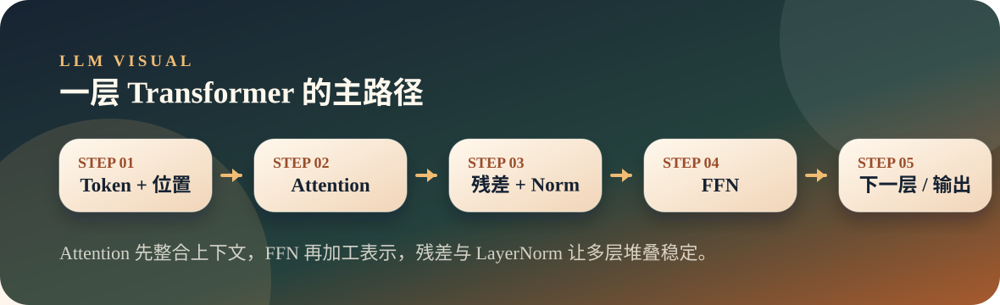

从零开始理解大模型
05. Transformer 全景：积木怎么搭成大厦
Transformer 把 Embedding、Attention、FFN、残差连接和 LayerNorm 堆叠起来，形成大模型的主体结构。
TransformerFFNResidual
Position
主线定位
前面几讲分别看了 token、向量和注意力。现在需要把这些积木放到一张图里，看清一层 Transformer 长什么样，很多层又是如何叠起来的。
Visual
图解流程

一层 Transformer 像一次小组讨论：Attention 先看上下文，FFN 再做局部加工，残差连接负责保留原始信息。
Run First
先跑实验
拆开 GPT-2，看参数分布、数据形状和逐层变化。
演示命令
python3 llm/05-transformer/transformer_anatomy.py "The capital of France is"Key Code
关键代码
这部分只看最能解释机制的片段，先抓数据怎么流动，再回到完整脚本。
参数分布总览
先看参数都在哪里，能帮助理解为什么 FFN 和 Attention 是主体。
24 # ==================== 1. 模型总览 ====================
25 print("\n" + "=" * 70)
26 print("GPT-2 模型结构总览")
27 print("=" * 70)
28
29 total_params = sum(p.numel() for p in model.parameters())
30 print(f"\n总参数量: {total_params:,} ({total_params / 1e6:.1f}M)")
31
32 # 按模块统计
33 embedding_params = model.transformer.wte.weight.numel() + model.transformer.wpe.weight.numel()
34 layer0 = model.transformer.h[0]
35 attn_params = sum(p.numel() for n, p in layer0.named_parameters() if 'attn' in n)
36 ffn_params = sum(p.numel() for n, p in layer0.named_parameters() if 'mlp' in n)
37 norm_params = sum(p.numel() for n, p in layer0.named_parameters() if 'ln' in n)
38 final_norm_params = sum(p.numel() for p in model.transformer.ln_f.parameters())
39
40 categories = [
41 ("Token Embedding", model.transformer.wte.weight.numel()),
42 ("Position Embedding", model.transformer.wpe.weight.numel()),
43 ("Attention (每层)", attn_params),
44 ("FFN (每层)", ffn_params),
45 ("LayerNorm (每层)", norm_params),
46 ("Attention (12层)", attn_params * 12),
47 ("FFN (12层)", ffn_params * 12),
48 ("最终 LayerNorm", final_norm_params),
49 ]
50
51 print(f"\n {'组件':<25} {'参数量':>12} {'占比':>8}")
52 print(" " + "-" * 50)
53
54 for name, count in categories:
55 pct = count / total_params * 100
56 bar = "█" * int(pct / 2)
57 print(f" {name:<25} {count:>12,} {pct:>7.1f}% {bar}")逐层数据流
从 Embedding 到 12 层 Transformer，再到 LM Head，这就是一次前向传播的主路径。
74 # ==================== 3. 数据流追踪 ====================
75 print(f"\n\n{'=' * 70}")
76 print(f"数据流追踪: '{text}'")
77 print("=" * 70)
78
79 input_ids = tokenizer.encode(text, return_tensors="pt")
80 tokens = [tokenizer.decode([id]) for id in input_ids[0]]
81 print(f"\nTokens: {tokens} (共 {len(tokens)} 个)")
82
83 with torch.no_grad():
84 # Step 1-3: Embedding
85 token_embeds = model.transformer.wte(input_ids)
86 positions = torch.arange(input_ids.shape[1]).unsqueeze(0)
87 pos_embeds = model.transformer.wpe(positions)
88 hidden = token_embeds + pos_embeds
89
90 print(f"\n ① Token Embedding: {input_ids.shape} → {token_embeds.shape}")
91 print(f" ② Position Embedding: {positions.shape} → {pos_embeds.shape}")
92 print(f" ③ 相加: {hidden.shape}")
93
94 # 保存原始 Embedding 用于后续对比
95 original = hidden.clone()
96
97 # Step 4-15: 12 层 Transformer
98 print(f"\n 逐层变换:")
99 print(f" {'层':<10} {'输入范数':>8} {'Attn后':>8} {'FFN后':>8} {'变化':>8} "
100 f"{'vs原始':>8}")
101 print(" " + "-" * 55)
102
103 for layer_idx in range(12):
104 layer = model.transformer.h[layer_idx]
105 input_norm = hidden.norm(dim=-1).mean().item()
106
107 # Attention block
108 residual = hidden
109 normed = layer.ln_1(hidden)
110 attn_out = layer.attn(normed)[0]
111 hidden = residual + attn_out
112 after_attn = hidden.norm(dim=-1).mean().item()
113
114 # FFN block
115 residual = hidden
116 normed = layer.ln_2(hidden)
117 ffn_out = layer.mlp(normed)
118 hidden = residual + ffn_out
119 output_norm = hidden.norm(dim=-1).mean().item()
120
121 # vs 原始 Embedding
122 cos_sim = torch.nn.functional.cosine_similarity(
123 original.flatten(), hidden.flatten(), dim=0
124 ).item()
125
126 delta = (output_norm - input_norm) / input_norm * 100
127 print(f" Layer {layer_idx:>2} {input_norm:>8.1f} {after_attn:>8.1f} "
128 f"{output_norm:>8.1f} {delta:>+7.1f}% {cos_sim:>7.3f}")
129
130 # 最终 LayerNorm + LM Head
131 hidden = model.transformer.ln_f(hidden)
132 logits = model.lm_head(hidden)
133
134 print(f"\n ⑯ 最终 LayerNorm → {hidden.shape}")
135 print(f" ⑰ LM Head → {logits.shape} (768 → 50257)")
136
137 # 预测
138 probs = torch.softmax(logits[0, -1, :], dim=0)
139 top5_probs, top5_ids = torch.topk(probs, 5)
140
141 print(f"\n 预测 Top 5:")
142 for i in range(5):
143 tok = tokenizer.decode([top5_ids[i]])
144 print(f" {i + 1}. '{tok}' ({top5_probs[i].item() * 100:.1f}%)")Observe
观察解释
运行时不要只看最后一行，重点看中间过程如何证明本讲机制。
- 脚本会先打印 GPT-2 的总参数量和各模块参数占比。
- 单层结构会展开 Attention、FFN、LayerNorm 等参数形状。
- 数据流追踪会显示 token 从 Embedding 一路经过 12 层 Transformer。
- 最后 LM Head 把隐藏向量重新映射回词表概率。
Try It
动手改一轮
把 Transformer 讲成“数据在一栋楼里逐层加工”，比直接堆术语更直观。
- 换一句输入，看 token 数变化如何影响数据形状。
- 重点观察每层
Attn后、FFN后的数值变化。 - 查看权重共享输出，理解输入 Embedding 和输出 LM Head 的关系。
Map
前后关系
这一页不是孤立知识点，它会连接前面已经讲过的机制，也为后面的章节铺路。
- Transformer 是大模型的主体骨架。
- Attention 负责看上下文，FFN 负责进一步加工表示。
- 残差连接让信息可以穿过很多层而不轻易丢失。
- Transformer 不是一个单独操作，而是一组模块的稳定组合。
- 层数越多，模型越能逐步加工复杂关系。
- 残差和 LayerNorm 是让深层模型稳定训练的重要工程结构。
Boundary
易混点
- 不要只记公式，先看清数据形状如何流动。
- FFN 不是可有可无，它承担了大量参数和表示加工。
- 模型大不只是层数多，也包括宽度、头数、词表等共同变化。
Extend
继续阅读
教学页只保留现场讲解需要的内容，完整文章与代码仍然保留在仓库中。